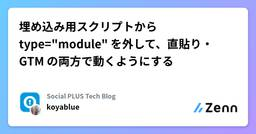

Social PLUS Tech Blogのフィード
https://zenn.dev/p/socialplus
株式会社ソーシャルPLUS 開発チームの技術ブログです。
フィード

埋め込み用スクリプトから type="module" を外して、直貼り・GTM の両方で動くようにする
Social PLUS Tech Blogのフィード
こんにちは、koyablueです。弊社では、Webサイトに埋め込んで利用するサードパーティスクリプトを提供しています。管理画面に表示されるスクリプトをコピーして、ECサイトに直接埋め込んだり、GTM（Google Tag Manager）経由で使用される想定です。この埋め込み用スクリプトには当初 <script type="module"> が使われており、そのままGTMに設定するだけでは動作しないという不都合がありました（なので、GTMで動作する形式に変換してから設定する運用が行われていました）。この記事では、この問題に対応するために行った変更を紹介します。 変...
7日前

Datadog の Metrics Explorer を扱う際の注意点
Social PLUS Tech Blogのフィード
こんにちは、バックエンドエンジニアの otsubo です。弊社では Datadog でメトリクスを監視しています。定期開催している「Datadog を見る会」のおかげでグラフには見慣れてきましたが、意図通りに設定するのは意外と難しいです。この記事では、設定ミスや誤解釈をしないための注意点をまとめました。メトリクス収集に関しては扱いません。収集時の工夫は前回記事で三口さんがまとめてくれています！https://zenn.dev/socialplus/articles/ada79030bb7b8c メトリクスの Unit, Type, Interval当然ながら単位は大事です。秒...
10日前
Datadog × CloudWatch Metric Streams でメトリクスを高速化 & コスト削減した話
Social PLUS Tech Blogのフィード
こんにちは、4月にソーシャルPLUSに入社した三口です!Datadog では、AWS CloudWatch のメトリクスを取り込む方式として、デフォルトで API Polling が利用されます。この方式は約10分ごとにメトリクスを取得するため、実際のメトリクスとの間に少々遅延が発生してしまいます。そこで今回、メトリクスの遅延を最小限に抑えられる Metric Streams へ移行したため、その内容について紹介します! 導入背景API Polling によるメトリクスの遅延により、以下のような課題がありました。Datadog でダッシュボードを作成していたものの、メトリク...
22日前
影響のあるアプリだけVRTを実行するようにして、CircleCIのクレジットを削減した
Social PLUS Tech Blogのフィード
こんにちは、Social PLUS のフロントエンドエンジニアのまっくすです。今回は、CircleCI のコストをきっかけに、普段あまり細かく見る機会のなかった CI のクレジット消費量を調べました。プロジェクトやジョブごとの利用状況を確認していくと、Storybook のビルドやスクリーンショット撮影を行うジョブが、フロントエンド全体のクレジット消費量の大きな割合を占めていることが分かりました。調査の結果、Storybook のビルドやスクリーンショット撮影を行うジョブが、フロントエンド全体のクレジット消費量の大きな割合を占めていることが分かりました。そこで、VRT の実行方法に...
23日前
tsgo で型チェックを早くしてみる
Social PLUS Tech Blogのフィード
1. はじめにまだ tsc がぐるぐる回っている。心当たりのある方、こんにちは。たいてい最初は身軽です。ところがコードは増える一方で、共有する処理も型も積み重なっていく。気づけば型チェックの待ち時間は、ジワジワと「いつか効いてくるボディブロー」になっています。誰も悪くない。ただコードが育っただけ。Microsoft が Go で全部書き直した TypeScript ネイティブ版（typescript-go / tsgo） 。型チェック約10倍だそうです。(TypeScript 7.0 として2026年中の安定版が予定されています。)本記事では、カタログスペックの「10倍...
1ヶ月前
【ActiveRecord】関連付けのオーナーを使って重い集計クエリを改善した話
Social PLUS Tech Blogのフィード
こんにちは、st-1985 です。今回はCommon Table Expression (CTE)を使用したクエリの処理に時間がかかっていたので改善した話を書いていきたいと思います。 状況以下のようなメッセージの配信情報とその統計情報の単位(Unit)となるモデル構成があります。Unit: 統計集計の単位となるエンティティDelivery: unit_id と delivered_at を持つ配信レコード。Unit ごとに複数存在する管理画面には Unit の一覧ページ(1ページ最大10件)があり、そこでは各 Unit において最後に行った配信の時間を表示しています...
2ヶ月前
Renovate で Terraform 管理の EKS クラスターとアドオンのバージョンを自動更新する
Social PLUS Tech Blogのフィード
こんにちは、tsub です 😄Terraform で EKS クラスターを管理している場合、アドオン（kube-proxy、vpc-cni、CoreDNS、EBS CSI ドライバー）のバージョン管理が課題になることがあります。弊社ではこれまで、アドオンのバージョンを Terraform aws provider の aws_eks_addon_version datasource で動的に取得していました。この方法は常に「推奨バージョン」を参照するため、新しいバージョンがリリースされるたびに terraform plan のドリフトが生じます。日を跨いでからリリースすると、ドリフト...
2ヶ月前
Vitestの設定を調整してテスト速度を改善してみる
Social PLUS Tech Blogのフィード
どうもこんにちは、たくびーです。業務のかたわらフロントエンドのテスト速度改善に取り組んでいます。先日はボトルネックとなるバレルファイルを特定し解消することで高速化を行いました。https://zenn.dev/socialplus/articles/bfb19c5f98ae32今回はちょっと違うアプローチでテスト速度の改善に挑戦してみました。!執筆時点でのVitestのバージョンはv4.1.5です。 コードベースが大きくなるほどVitestが遅く感じる？Vitestは高速なテストランナーとして知られています。実際、Jestと比べてかなり速いです。それでも、コードベー...
2ヶ月前
Redash の Query Result をパラメータ付きで参照する
Social PLUS Tech Blogのフィード
Redash v10.1 より後（おそらく v25 系から）利用できるようになった、Query Results Data Source (QRDS) のクエリパラメータ指定を含む呼び出しの使い方について、2026/05/18 時点の公式ユーザーガイドでは、単純な整数値（id）の指定方法の例しか無いため、複数指定の方法を雑に[1]確認したメモ記事です。-- 参照するクエリ（Query 12345）-- Query Parameters を出力するだけのクエリSELECT "{{DATE1}}" AS date1, "{{DATE2}}" AS date2, "{{DATE...
2ヶ月前
AIが1000行書くより、人間が1行レビューするほうが難しい
Social PLUS Tech Blogのフィード
最近、AIでコードを書くのがかなり普通になってきた。Cursor や Claude Code みたいなツールを使えば、数分で数百行〜数千行のコードが出てくる。実際かなり便利だし、自分も日常的に使っている。ただ最近、OSS や会社の現場を見ていて感じるのは、「コードを書く速度」より「コードベースを維持する能力」のほうが重要になってきているということ。 AI が怖いのは「バグ」ではないAI のコードって、意外と普通に動く。テストも通るし、型も合うし、一見ちゃんとして見える。でも本当に怖いのはそこではなくて、よく分からない abstraction が増える...
2ヶ月前
プロダクトバックログを一列に並べたらシンプルになった
Social PLUS Tech Blogのフィード
「自分たちのプロダクトバックログが複雑すぎてわからん」という問題を改善しました。 改善前今まで使っていたプロダクトバックログには、次のような9つの状態（以下、status と呼びます）がありました。基本的には、この順序で status が進んでいきます。Draft：下書きUI required：デザイン待ちBacklog：要件とデザインが確定したWaiting for refinement：リファインメント待ちIn refining：リファインメント中Refined：リファインメント済みReady：次のスプリントで着手するつもりIn progress：このスプリン...
3ヶ月前
RubyKaigi 2026 参加レポート
Social PLUS Tech Blogのフィード
はじめにこんばんは、 okumud です。先日 RubyKaigi 2026 へ参加してきました。弊社は本年も Gold Sponsor として協賛し、 simomu, terandard, otsubo, masaki, 私 の 5人で参加しました。 また、グループ会社の feedforce から pokotyamu も参加しました。https://prtimes.jp/main/html/rd/p/000000167.000085682.htmlこの記事ではそれぞれ印象に残ったセッションについて紹介します。 印象に残ったセッション Guide to g...
3ヶ月前
Rails 8.0 から except_on オプションで「このコンテキストではバリデーションをスキップしたい」が書けるようになった
Social PLUS Tech Blogのフィード
Rails 8.0 から except_on オプションで「このコンテキストではバリデーションをスキップしたい」が直感的に書けるようになりました。修正は以下で行われています。2021年10月に作成されたプルリクエストなので要求自体は結構前からあったようです。https://github.com/rails/rails/pull/43495以下のように、バリデーション定義時に except_on オプションを使用できるようになります。class Post < ApplicationRecord validates :title, presence: true, excep...
3ヶ月前
pnpm v10 へのアップグレードで Vercel ビルドが失敗した話
Social PLUS Tech Blogのフィード
こんにちは、steshima です。ソーシャル PLUS のフロントエンドでは、パッケージマネージャーに pnpm を使用しています。先日、その pnpm のバージョンを v9 から v10 にアップグレードしたところ、Vercel 上でのビルドが失敗するようになりました。原因や対応内容を備忘録として残しておきます。 発生したエラービルド失敗時、Vercel では下記のビルドログが出力されていました。Detected `pnpm-lock.yaml` 9 which may be generated by pnpm@9.x or pnpm@10.xUsing pnpm@9...
3ヶ月前
AI 任せにできない。Bad / Good で整理するリネームのパターン
Social PLUS Tech Blogのフィード
こんにちは、あるいはこんばんは。まっくすです。今日は私がよく指摘されるリネームについて書こうかと思います！コードを書いていると、名前を変えたくなる場面はよくありますよね？一見するとリネームは簡単そうに見えますが、単なる文字列置換では終わらないことが多いです。 この記事で扱うリネームのパターンこの記事では、リネームを次の5つのパターンに分けて考えます。表記ゆれを揃えるリネーム意味の変化に追従するリネーム型の変更に伴うリネーム利用側の命名も揃える必要があるケース仕様変更に伴うリネーム 命名は難しい命名が難しいのは、単に識別しやすい名前をつければよいわけではない...
3ヶ月前
画面遷移前の“すき間時間”でボタンがクリックできてしまっていた話
Social PLUS Tech Blogのフィード
こんにちは、ずっきーです！フォーム送信時にボタンを非活性（disabled）状態にしても、画面遷移前の短い時間にボタンがクリックできてしまう問題がありました。原因と対策法について深掘りしていこうと思います。 問題の概要ログインフォームで「次へ」ボタンを押すと API を呼び出し、リクエスト成功後に別ページへリダイレクトする実装でした。const onSubmit = async (values: FormValues) => { try { await fetch('/sample', { method: 'POST', body:...
3ヶ月前
job-iteration gem から Active Job Continuation に移行した
Social PLUS Tech Blogのフィード
こんにちは、terandard です。Ruby on Rails 8.1 から Job を中断・再開できる Active Job Continuation という機能が追加されました。この機能を利用すると、長時間実行される Job がデプロイなどによって中断された場合でも、再開して続きから実行することができます。https://railsguides.jp/active_job_basics.html#ジョブの継続この機能は job-iteration gem から着想を得て実装されたものです。This took a lot inspiration from Shopify's...
3ヶ月前
社内勉強会「Social PLUS Tech Talk」の紹介
Social PLUS Tech Blogのフィード
こんにちは、simomu です。今日は Social PLUS 社内で開催している勉強会「Social PLUS Tech Talk」の紹介をします。 Social PLUS Tech TalkSocial PLUS Tech Talk は2週間に1回、開発チームの中から当番の人が最近触った技術や勉強したことなどを発表していく技術勉強会です。「技術勉強会」と称していますが、技術に限らずマネジメントやチームビルディングに関する話も OK になっています。もともとは同じグループ会社の Feedforce 社で行われていた社内勉強会を Social PLUS 社でもやっていきたいと...
4ヶ月前
k6-operator on Argo CD でワンクリック実行可能な負荷試験環境を構築する
Social PLUS Tech Blogのフィード
概要弊社では、スパイク耐性などを検証するため、k6 による負荷試験環境を Kubernetes 上に構築しています。この記事では 「Argo CD の GUI からワンクリックで負荷試験が走る」 仕組みをどう実装したかを紹介します。 前提条件本記事では以下のバージョンを前提としています。Amazon EKS (EC2) 1.33Argo CDImage v3.3.3Helm Chart 9.4.10k6-operatorImage v1.2.0Helm Chart 4.2.0k6v1.6.1 k6 の実行方法と管理方法の検討k6-...
4ヶ月前
MySQL (InnoDB) の INSERT 時のロックを深掘る
Social PLUS Tech Blogのフィード
はじめにhttps://zenn.dev/socialplus/articles/2e16da32f39a0cの続きです。前のブログでは、UPDATE、DELETE、 SELECT ... FOR UPDATE / SHARE のロックを主に紹介しました。そして INSERT 時のインサートインテンションロックがギャップロックを待つことでファントム行のアノマリーを防止すると書きました。本記事では INSERT 時に獲得される インサートインテンション以外の ロックを紹介します。INSERT 時のロックは獲得の仕組みが複雑で、再現が難しいことがあります。特に INSERT ......
4ヶ月前